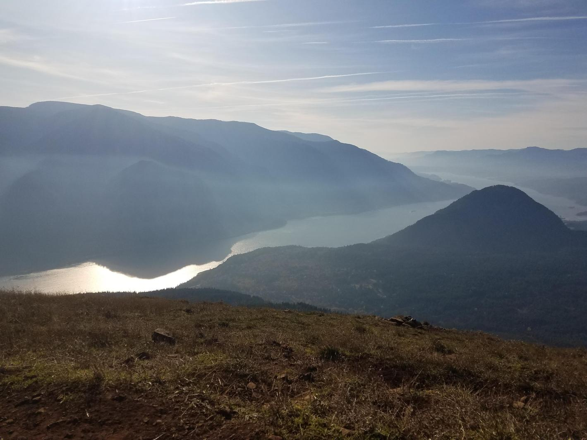
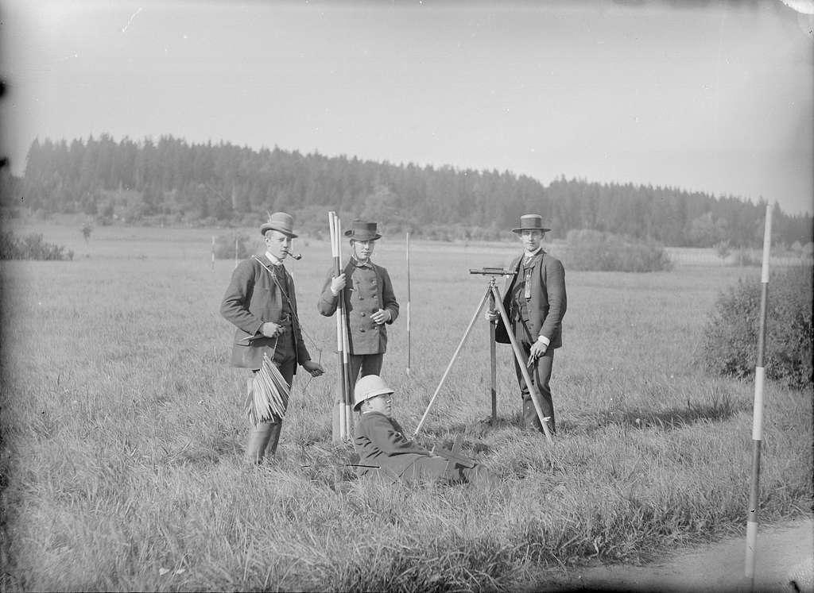
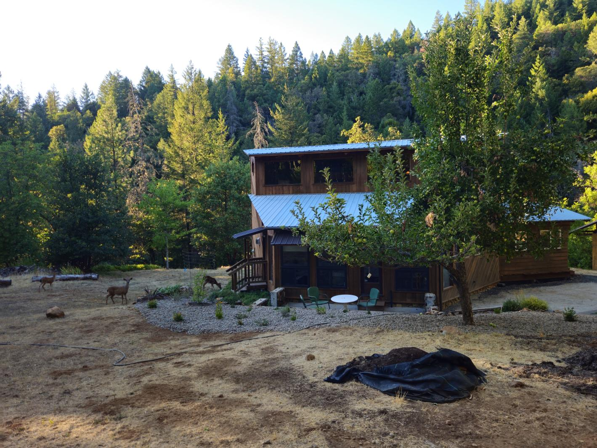
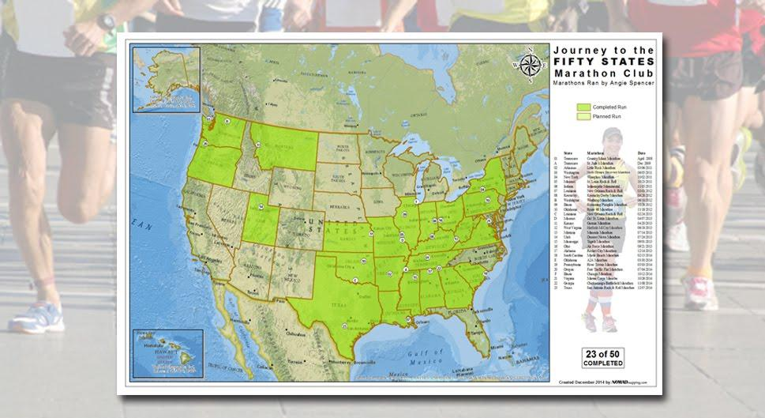
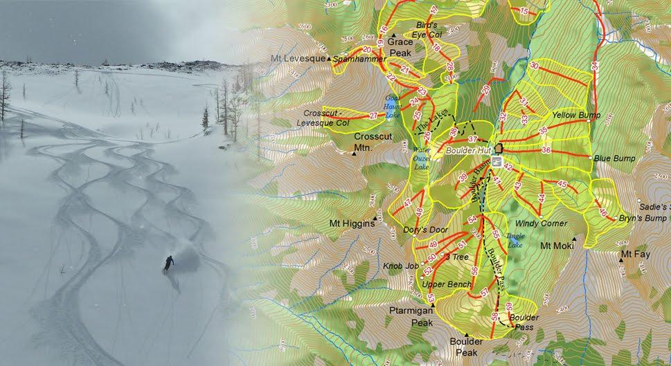
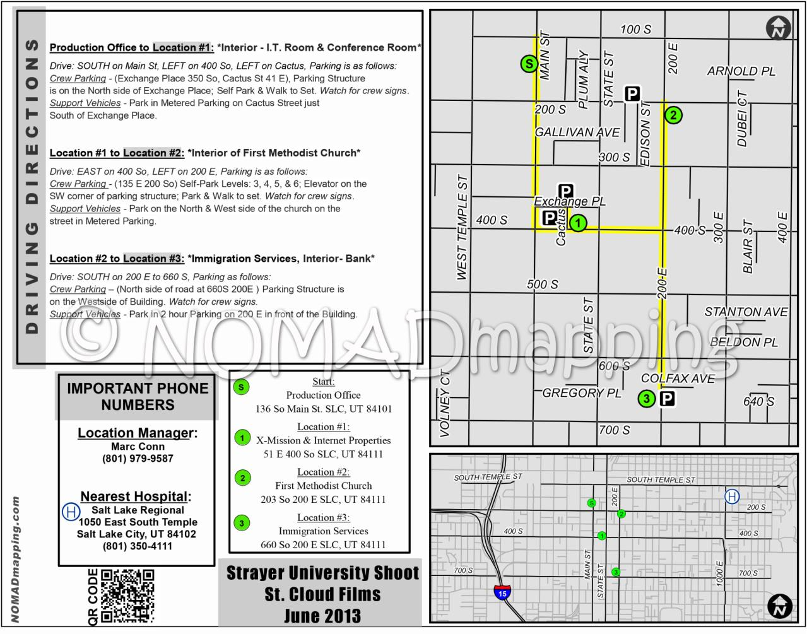
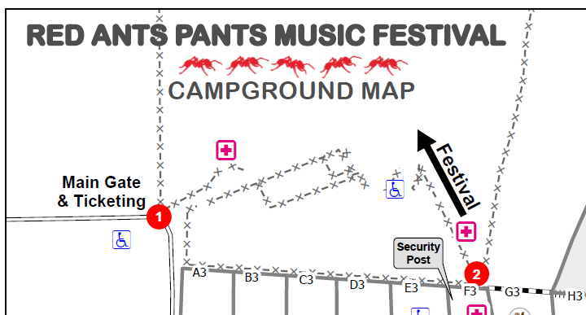

Every project has unique spatial requirements. Here are examples of how we've helped organizations clean up data, build field workflows, and create custom web maps.

Nomad Mapping rebuilt the Friends GIS from the ground up, creating a structured and efficient system for managing spatial data, maps, and files. By bringing together ArcGIS Online, web mapping, and traditional GIS, the system makes information easier to access, manage, and use—supporting long-term land stewardship while saving time and resources. Nomad Mapping supports the Friends with a Climate Resilience project.

We transformed Inter-Fluve’s stream survey process from paper-based to digital. Using Field Maps, surveyors can enter information directly from mobile devices in the field, making data immediately available on the desktop. The workflow reduces post-survey processing and lets surveyors spend less time managing paperwork and more time doing their work.

Workflows were created using Survey123, QuickCapture, and Field Maps to help The Friends collect information and monitor preserves in the field. The workflows connect field observations with the GIS used to support conservation and stewardship.

Support was provided to land surveyors using the GIS platform and field architecture they need to collect information using ArcGIS Field Maps. After field work is complete, Nomad Mapping helps process and organize the data so it can be incorporated into professional, industry-standard deliverables.

An interactive web mapping application was created, showcasing project gardens throughout Hood River County. Built with Experience Builder, the application gives the public an easy way to explore garden locations and learn about each site’s purpose and features. View mapping application.

Nomad Mapping helps manage a 200+ acre property with multiple structures, forest management needs, assets, and infrastructure. GIS provides a common picture of the property and helps owners and contractors communicate about what needs to be done—and exactly where.
A few other mapping projects that show the range of work Nomad Mapping has taken on over the years.

Nomad Mapping creates custom race maps and personalized marathon keepsake maps, including maps designed to showcase a runner's journey through the 50 State Marathon Club.

This was a custom cartography project for Boulder Hut, a backcountry ski destination in British Columbia. Nomad Mapping created a beautiful map to help guests visualize routes and plan their week in the mountains.

Maps can keep a production crew organized and in the loop throughout the day, showing site locations, infrastructure, and scheduled set changes.

Digital mapping was utilized for Infrastructure management, setup, and guest camping. Clean & well thought out databases & maps ensure this event operate without a hitch. Nomad Mapping has enjoyed working with Red Ants Pants since 2024.